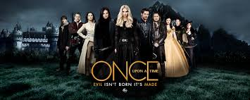

My most favorite TV show
I have watched many tv shows and I personally think that this show is the best of all. It has evreything I could possibly ask for, thriller, adventure, action and mystery that can lead up to a new problem throughout the characters. These are one of the many reasons why I like this tv show so much. Its about a group of people who meet up with each other soon to find out that there one big family seperated from each other years ago. There are many fictional characters such as elsa from frozen and Caption hook from peter pan and the neverland pirates. Id rate this show a 5 star becuase of the action based thriller that get from watching this show. Its just that good enough to watch. Trust me when I say this, once u watch this show, you won't get enough of it.